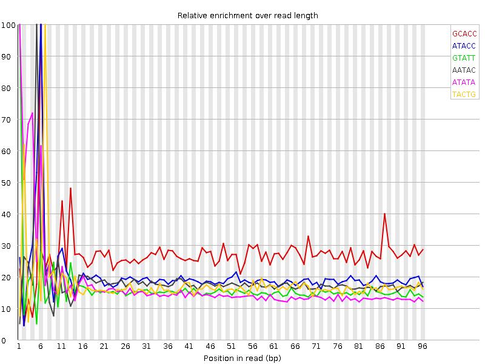

Tue 12 Jan 2016
8_140619_BC47HDACXX_P1260_1001_1.fastq
Summary
![[FAIL]](Icons/tick.png) Basic Statistics
Basic Statistics
| Measure |
Value |
| Filename |
8_140619_BC47HDACXX_P1260_1001_1.fastq |
| File type |
Conventional base calls |
| Total Sequences |
3480996 |
| Sequence length |
101 |
| %GC |
37 |
Back to summary
![[FAIL]](Icons/warning.png) Kmer Content
Kmer Content

| Sequence |
Count |
Obs/Exp Overall |
Obs/Exp Max |
Max Obs/Exp Position |
| GCACC |
182455 |
1.3665874 |
5.0188975 |
6 |
| ATACC |
394755 |
1.0916137 |
5.381041 |
6 |
| GTATT |
598950 |
1.0163375 |
6.2455506 |
1 |
| AATAC |
589795 |
0.99553573 |
5.4024734 |
5 |
| ATATA |
923235 |
0.9499994 |
5.441957 |
1 |
| TACTG |
335870 |
0.934896 |
5.250805 |
7 |
| TATTA |
844075 |
0.86742675 |
5.662355 |
2 |
| ATACT |
513275 |
0.8652601 |
5.8041506 |
6 |
| TATAC |
509270 |
0.85850865 |
6.7023253 |
5 |
| GTATA |
453415 |
0.77037555 |
7.1955523 |
1 |
Back to summary
![[FAIL]](Icons/error.png) Per base sequence content
Per base sequence content